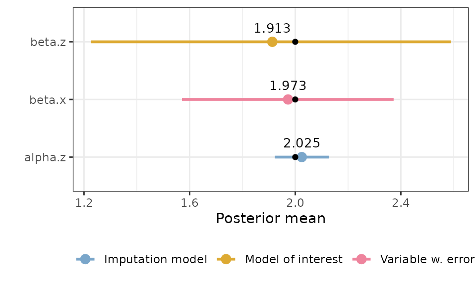

Simulated examples
simulated_examples.RmdThis vignette shows how to fit measurement error and imputation
models using the inlami package for a few different simple
simulated data sets. Note that although the data sets describe realistic
situations, they are all completely fictitious, and created purely to
illustrate how to fit models in different situations.
Simple example with missingness and two types of measurement error
| Error types | Likelihood | Response | Covariate with error | Other covariate(s) |
|---|---|---|---|---|
| Berkson, classical, missing values | Gaussian | \(y\) | \(x\) | \(z\) |
This is a simple simulation with Berkson and classical error as well as missing data, to check that the package works as expected in that scenario.
Generating the data
set.seed(2024)
n <- 1000
# Covariate without error:
z <- rnorm(n, mean = 0, sd = 1)
# Berkson error:
u_b <- rnorm(n, sd = 1)
alpha.0 <- 1; alpha.z <- 2
r <- rnorm(n, mean = alpha.0 + alpha.z*z, sd = 1)
x <- r + u_b # Turn off Berkson by commenting out "+ u_b"
# Response:
beta.0 <- 1; beta.x <- 2; beta.z <- 2
y <- beta.0 + beta.x*x + beta.z*z + rnorm(n)
# Classical error:
u_c <- rnorm(n, sd = 1)
x_obs <- r + u_c
# Missingness:
m_pred <- -1.5 - 0.5*z # This gives a mean probability of missing of ca 0.2.
m_prob <- exp(m_pred)/(1 + exp(m_pred))
m_index <- as.logical(rbinom(n, 1, prob = m_prob)) # MAR
# m_index <- sample(1:n, 0.2*n, replace = FALSE) # MCAR
x_obs[m_index] <- NA
simple_data <- data.frame(y = y, x = x_obs, z = z)Fitting the model
# Fit the model
simple_model <- fit_inlami(data = simple_data,
formula_moi = y ~ x + z,
formula_imp = x ~ z,
family_moi = "gaussian",
error_type = c("berkson", "classical"),
prior.prec.moi = c(10, 9), # Gamma(10, 9)
prior.prec.berkson = c(10, 9), # Gamma(10, 9)
prior.prec.classical = c(10, 9), # Gamma(10, 9)
prior.prec.imp = c(10, 9), # Gamma(10, 9)
prior.beta.error = c(0, 1/1000), # N(0, 10^3)
initial.prec.moi = 1,
initial.prec.berkson = 1,
initial.prec.classical = 1,
initial.prec.imp = 1)
summary(simple_model)
#> Formula for model of interest:
#> y ~ x + z
#>
#> Formula for imputation model:
#> x ~ z
#>
#> Error types:
#> [1] "berkson" "classical"
#>
#> Fixed effects for model of interest:
#> mean sd 0.025quant 0.5quant 0.975quant mode kld
#> beta.0 1.031249 0.2198842 0.6132065 1.029412 1.449078 1.027625 1.162695e-06
#> beta.z 1.913155 0.3900030 1.2257706 1.906589 2.588919 1.915179 2.139201e-04
#>
#> Coefficient for error prone variable:
#> mean sd 0.025quant 0.5quant 0.975quant mode
#> beta.x 1.972789 0.2035787 1.570956 1.973151 2.372519 1.97465
#>
#> Fixed effects for imputation model:
#> mean sd 0.025quant 0.5quant 0.975quant mode
#> alpha.0 1.033087 0.05057396 0.9338678 1.033095 1.132257 1.033095
#> alpha.z 2.024692 0.05223629 1.9222901 2.024674 2.127200 2.024674
#> kld
#> alpha.0 3.292411e-11
#> alpha.z 5.688201e-11
#>
#> Model hyperparameters (apart from beta.x):
#> mean sd 0.025quant 0.5quant
#> Precision for model of interest 1.1230522 0.3587483 0.5596738 1.0758838
#> Precision for Berkson model 1.1245193 0.3521667 0.5868560 1.0733846
#> Precision for classical model 0.9275223 0.1106521 0.7283925 0.9211365
#> Precision for imputation model 0.9777286 0.1267110 0.7521405 0.9695957
#> 0.975quant mode
#> Precision for model of interest 1.956180 0.9899353
#> Precision for Berkson model 1.958810 0.9781263
#> Precision for classical model 1.163415 0.9087795
#> Precision for imputation model 1.250172 0.9534796
simple.truth <- tibble::tribble(
~"coefficient_name", ~"value",
"beta.x", beta.x,
"beta.z", beta.z,
# "beta.0", beta.0,
"alpha.z", alpha.z,
# "alpha.0", alpha.0
)
plot(simple_model, plot_intercepts = FALSE) +
geom_point(data = simple.truth, aes(x = value))
Missing data only
| Error types | Likelihood | Response | Covariate with error | Other covariate(s) |
|---|---|---|---|---|
| Missing values | Gaussian | \(y\) | \(x\) | \(z\) |
In this example, we have missingness in one covariate, but no other measurement error, so this shows how to do simple imputation of a missing covariate in R-INLA.
Generating the data
set.seed(2024)
n <- 1000
# Covariate without missingness:
z <- rnorm(n, mean = 0, sd = 1)
# Covariate that will have missingness:
alpha.0 <- 1; alpha.z <- 2
x <- rnorm(n, mean = alpha.0 + alpha.z*z, sd = 1)
# Response:
beta.0 <- 1; beta.x <- 2; beta.z <- 2
y <- beta.0 + beta.x*x + beta.z*z + rnorm(n)
# Missingness:
m_pred <- -1.5 - 0.5*z # This gives a mean probability of missing of ca 0.2.
m_prob <- exp(m_pred)/(1 + exp(m_pred))
m_index <- as.logical(rbinom(n, 1, prob = m_prob)) # MAR
# m_index <- sample(1:n, 0.2*n, replace = FALSE) # MCAR
x_obs <- x
x_obs[m_index] <- NA
missing_data <- data.frame(y = y, x = x_obs, z = z)Model without imputation
naive_model <- inla(formula = y ~ x + z, family = "gaussian", data = missing_data)
naive_model$summary.fixed
#> mean sd 0.025quant 0.5quant 0.975quant mode
#> (Intercept) 2.059952 0.07314562 1.9164903 2.059952 2.203413 2.059952
#> x 1.060038 0.04848473 0.9649447 1.060038 1.155132 1.060038
#> z 4.242952 0.09767456 4.0513818 4.242952 4.434522 4.242952
#> kld
#> (Intercept) 1.012639e-11
#> x 1.008323e-11
#> z 1.014764e-11
naive_model$summary.hyperpar
#> mean sd 0.025quant
#> Precision for the Gaussian observations 0.3082831 0.0137937 0.2818492
#> 0.5quant 0.975quant mode
#> Precision for the Gaussian observations 0.3080786 0.3359035 0.3076686Model with imputation
missing_model <- fit_inlami(formula_moi = y ~ x + z,
formula_imp = x ~ z,
family_moi = "gaussian",
data = missing_data,
error_type = "missing",
prior.prec.moi = c(2, 1),
prior.prec.imp = c(2, 1),
prior.beta.error = c(0, 1/1000),
initial.prec.moi = 1,
initial.prec.imp = 1)
summary(missing_model)
#> Formula for model of interest:
#> y ~ x + z
#>
#> Formula for imputation model:
#> x ~ z
#>
#> Error types:
#> [1] "missing"
#>
#> Fixed effects for model of interest:
#> mean sd 0.025quant 0.5quant 0.975quant mode kld
#> beta.0 1.029828 0.04089294 0.9498259 1.029770 1.110161 1.029769 8.331011e-10
#> beta.z 2.060297 0.04675295 1.9697429 2.060012 2.152542 2.060021 2.316844e-08
#>
#> Coefficient for error prone variable:
#> mean sd 0.025quant 0.5quant 0.975quant mode
#> beta.x 1.963288 0.01576504 1.933504 1.96288 1.995529 1.961062
#>
#> Fixed effects for imputation model:
#> mean sd 0.025quant 0.5quant 0.975quant mode
#> alpha.0 1.033189 0.05331498 0.9286436 1.033189 1.137736 1.033189
#> alpha.z 1.983020 0.05440408 1.8763383 1.983020 2.089702 1.983020
#> kld
#> alpha.0 4.987690e-11
#> alpha.z 4.981296e-11
#>
#> Model hyperparameters (apart from beta.x):
#> mean sd 0.025quant 0.5quant
#> Precision for model of interest 0.7886671 0.008225834 0.7747637 0.7880161
#> Precision for classical model 1.5602307 0.021709333 1.5227650 1.5587094
#> Precision for imputation model 0.3634847 0.002517033 0.3585089 0.3634897
#> 0.975quant mode
#> Precision for model of interest 0.8067706 0.7849349
#> Precision for classical model 1.6075313 1.5515962
#> Precision for imputation model 0.3684296 0.3635330
missing_truth <- tibble::tribble(
~"coefficient_name", ~"value",
"beta.0", beta.0,
"beta.x", beta.x,
"beta.z", beta.z,
"alpha.0", alpha.0,
"alpha.z", alpha.z
)
plot(missing_model) +
geom_point(data = missing_truth, aes(x = value))
Random effect in the main model
| Error types | Likelihood | Response | Covariate with error | Other covariate(s) |
|---|---|---|---|---|
| Classical | Gaussian | \(y\) | \(x\) | \(z\), random effect \(w\) |
In this example, we simulate data that is grouped in such a way that it should be modelled with a random effect in the model of interest.
Generating the data
m <- 10 # number of groups
n <- 100 # number of observations per group
N <- m*n # total number of observations
sd_y <- 3 # sd for the noise
sd_w <- 2 # sd for random effect
sd_x <- 2 # sd for covariate without error
sd_u <- 1 # sd for measurement error
# Covariate without error
z <- rnorm(N, 0, 2)
# Covariate with error
x <- rnorm(N, 0, sd_x) # Independent of z, but can change that here
x_obs <- x + rnorm(N, 0, sd_u)
# Random effect
w_per_group <- rnorm(m, 0, sd_w)
w <- rep(w_per_group, each = n)
# Response
y <- 1 + 2*x + 2*z + w + rnorm(N, 0, sd_y)
reff_data <- data.frame(y = y, id = rep(1:m, each = n), x = x_obs, z = z)Fitting the model
Firstly, if we ignored the measurement error, we might fit a model like this:
naive_model <- inla(y ~ x + z + f(id, model = "iid"),
data = reff_data,
family = "gaussian")
summary(naive_model)
#>
#> Call:
#> c("inla.core(formula = formula, family = family, contrasts = contrasts,
#> ", " data = data, quantiles = quantiles, E = E, offset = offset, ", "
#> scale = scale, weights = weights, Ntrials = Ntrials, strata = strata,
#> ", " lp.scale = lp.scale, link.covariates = link.covariates, verbose =
#> verbose, ", " lincomb = lincomb, selection = selection, control.compute
#> = control.compute, ", " control.predictor = control.predictor,
#> control.family = control.family, ", " control.inla = control.inla,
#> control.fixed = control.fixed, ", " control.mode = control.mode,
#> control.expert = control.expert, ", " control.hazard = control.hazard,
#> control.lincomb = control.lincomb, ", " control.update =
#> control.update, control.lp.scale = control.lp.scale, ", "
#> control.pardiso = control.pardiso, only.hyperparam = only.hyperparam,
#> ", " inla.call = inla.call, inla.arg = inla.arg, num.threads =
#> num.threads, ", " keep = keep, working.directory = working.directory,
#> silent = silent, ", " inla.mode = inla.mode, safe = FALSE, debug =
#> debug, .parent.frame = .parent.frame)" )
#> Time used:
#> Pre = 0.199, Running = 0.312, Post = 0.0154, Total = 0.526
#> Fixed effects:
#> mean sd 0.025quant 0.5quant 0.975quant mode kld
#> (Intercept) -0.316 0.560 -1.430 -0.316 0.797 -0.316 0
#> x 1.682 0.051 1.582 1.682 1.782 1.682 0
#> z 2.022 0.058 1.908 2.022 2.136 2.022 0
#>
#> Random effects:
#> Name Model
#> id IID model
#>
#> Model hyperparameters:
#> mean sd 0.025quant 0.5quant
#> Precision for the Gaussian observations 0.077 0.003 0.070 0.077
#> Precision for id 0.402 0.186 0.144 0.367
#> 0.975quant mode
#> Precision for the Gaussian observations 0.084 0.077
#> Precision for id 0.859 0.304
#>
#> Marginal log-Likelihood: -2756.05
#> is computed
#> Posterior summaries for the linear predictor and the fitted values are computed
#> (Posterior marginals needs also 'control.compute=list(return.marginals.predictor=TRUE)')
# curve(dgamma(x, shape = 1.5, rate = 2), to = 2)
reff_model <- fit_inlami(formula_moi = y ~ x + z +
f(id, model = "iid", hyper = list(prec = list(initial = -15, param = c(2, 2)))),
formula_imp = x ~ 1,
family_moi = "gaussian",
error_type = "classical",
data = reff_data,
initial.prec.moi = 1/4,
initial.prec.classical = 1,
initial.prec.imp = 1/4,
prior.prec.moi = c(1, 4),
prior.prec.classical = c(10, 10),
prior.prec.imp = c(1, 4),
prior.beta.error = c(0, 1/1000))
summary(reff_model)
#> Formula for model of interest:
#> y ~ x + z + f(id, model = "iid", hyper = list(prec = list(initial = -15,
#> param = c(2, 2))))
#>
#> Formula for imputation model:
#> x ~ 1
#>
#> Error types:
#> [1] "classical"
#>
#> Fixed effects for model of interest:
#> mean sd 0.025quant 0.5quant 0.975quant mode
#> beta.0 -0.3648504 0.53566988 -1.426019 -0.3648897 0.6969796 -0.3648098
#> beta.z 2.0224663 0.05799794 1.908712 2.0224670 2.1362162 2.0224670
#> kld
#> beta.0 6.251497e-08
#> beta.z 1.287215e-11
#>
#> Coefficient for error prone variable:
#> mean sd 0.025quant 0.5quant 0.975quant mode
#> beta.x 2.125922 0.1847705 1.76871 2.123717 2.496186 2.114319
#>
#> Fixed effects for imputation model:
#> mean sd 0.025quant 0.5quant 0.975quant mode
#> alpha.0 0.1022764 0.07118737 -0.0373394 0.1022764 0.2418923 0.1022764
#> kld
#> alpha.0 1.193136e-12
#>
#> Model hyperparameters (apart from beta.x):
#> mean sd 0.025quant 0.5quant
#> Precision for model of interest 0.1094637 0.01879080 0.0777452 0.1076835
#> Precision for classical model 1.0003936 0.32323078 0.5016935 0.9551432
#> Precision for imputation model 0.2509317 0.02485776 0.2062846 0.2494658
#> Precision for id 0.4305115 0.17933431 0.1775308 0.3983712
#> 0.975quant mode
#> Precision for model of interest 0.1515106 0.1038852
#> Precision for classical model 1.7599419 0.8717436
#> Precision for imputation model 0.3040662 0.2460650
#> Precision for id 0.8702899 0.3405001
reff.truth <- tibble::tribble(
~"coefficient_name", ~"value",
"beta.x", 2,
"beta.z", 2,
"beta.0", 1,
"alpha.0", 0
)
plot(reff_model) +
geom_point(data = reff.truth, aes(x = value))
Air pollution example
| Error types | Likelihood | Response | Covariate with error | Other covariate(s) |
|---|---|---|---|---|
| Berkson, classical | Binomial | asthma | airpollution | gender, age, district |
In this example, we simulate data from a fictitious, but realistic scenario where we want examine if people in areas with high air pollution seem to have asthma more than in areas with lower air pollution. But the air pollution value for the people in the study canot be observed directly, instead sensors have been placed at certain locations, and the value for a person is set to be the value gathered at the closest sensor. This leads to a Berkson error. In addition to that, we believe that there is some noise in the measurements due to imprecision in the sensor. This corresponds to a classical measurement error.
TODO: random intercept model for district instead of treating it as continuous variable.
Generating the data
set.seed(2034)
n <- 1000
gender <- sample(c(0,1), n, replace = TRUE)
age <- rgamma(n, shape = 10, scale = 3)
district <- sample(1:10, n, replace = TRUE)
alpha.0 <- 3; alpha.district <- 0.05
pollution_b <- alpha.0 + alpha.district*district +
rnorm(n, mean = 0, sd = 4) # Berkson error
pollution <- pollution_b + rnorm(n, 0, 1) # Classical and Berkson error (this is what is observed)
pollution_correct <- pollution_b + rnorm(n, mean = 0, sd = 2) # Correct
beta.0 <- -8; beta.pollution <- 1; beta.gender <- -1;
beta.age <- 0.5; beta.district <- -2
asthma_predictor <- beta.0 + beta.pollution*pollution_correct +
beta.gender*gender + beta.age*age + beta.district*district
asthma_prob <- exp(asthma_predictor)/(1 + exp(asthma_predictor))
asthma <- rbinom(n, 1, prob = asthma_prob)
airpollution <- data.frame(asthma = asthma,
pollution = pollution,
district,
age,
gender)Fitting the model
# Scale the data
airpollution_scaled <- airpollution %>%
mutate(across(c(pollution, age), ~ c(scale(., scale = FALSE))))
airpollution_moi <- asthma ~ pollution + district + age + gender
airpollution_imp <- pollution ~ district
airpollution_model <- fit_inlami(data = airpollution_scaled,
formula_moi = airpollution_moi,
formula_imp = airpollution_imp,
family_moi = "binomial",
error_type = c("berkson", "classical"),
prior.prec.berkson = c(1000, 999),
prior.prec.classical = c(1000, 999),
prior.prec.imp = c(0.5, 0.5),
prior.beta.error = c(0, 1/1000),
initial.prec.berkson = 1,
initial.prec.classical = 1,
initial.prec.imp = 1/16)
airpollution_summary <- summary(airpollution_model)
airpollution.truth <- tibble::tribble(
~"coefficient_name", ~"value",
"beta.pollution", beta.pollution,
"beta.gender", beta.gender,
"beta.district", beta.district,
"beta.age", beta.age,
# "beta.0", beta.0,
"alpha.district", alpha.district,
# "alpha.0", alpha.0
)
plot(airpollution_model, plot_intercepts = FALSE) +
geom_point(data = airpollution.truth, aes(x = value))Birthweight example
| Error types | Likelihood | Response | Covariate with error | Other covariate(s) |
|---|---|---|---|---|
| Classical, missing values | Gaussian | birthweight | mother’s weight | age, gestation time |
In this example, we construct fictitious data mimicking a scenario where we are interested in studying the birth weight of newborn babies, and how slightly misreported weights of the mother influence the baby’s weight. In this example we therefore have the mother’s weight as a covariate with classical error, and in addition a few of the weight measurements for the mothers are missing.
Status: Occasionally get crash message, this seems to be when the response is a very different scale from the covariates. When I don’t get the crash message, I still get the wrong estimate for everything except beta.gestationtime.
Generating the data
set.seed(2024)
n <- 1000
# Covariate without error, correlated with error-variable:
age <- rgamma(n, shape = 60, scale = 0.5)
# Covariate without error, uncorrelated with other covariates:
gestation_time <- rnorm(n, mean = 40, sd = 2)
# Covariate with classical error:
alpha.age <- 0.4; alpha.0 <- 50
mom_weight_correct <- rnorm(n, mean = alpha.0 + alpha.age*age, sd = 4)
mom_weight <- mom_weight_correct + rnorm(n, mean = 0, sd = 3) # Classical error
# Missingness:
m_pred <- -1.35 - 0.001*age # This gives a mean probability of missing of ca 0.2.
m_prob <- exp(m_pred)/(1 + exp(m_pred))
m_index <- as.logical(rbinom(n, 1, prob = m_prob)) # MAR
# m_index <- sample(1:n, 0.2*n, replace = FALSE) # MCAR
mom_weight[m_index] <- NA
# Response:
beta.0 <- 0; beta.mom_weight <- 5; beta.age <- -5; beta.gestation_time <- 5
birthweight <- beta.0 + beta.mom_weight*mom_weight_correct +
beta.age*age + beta.gestation_time*gestation_time +
rnorm(n, mean = 0, sd = 30)
hist(birthweight)
birthweight <- data.frame(birthweight, mom_weight, age, gestation_time)Fitting the model
# Priors for y, measurement error and true x-value precision
prior.prec.y <- c(10, 9) # Gamma(0.5, 0.5)
prior.prec.u_b <- c(100, 100) # Gamma(0.5, 0.5)
prior.prec.u_c <- c(100, 100) # Gamma(0.5, 0.5)
prior.prec.r <- c(0.5, 0.5) # Gamma(0.5, 0.5)
# Initial values
initial.prec.y <- 1
initial.prec.u_b <- 1
initial.prec.u_c <- 1/9
initial.prec.r <- 1
birthweight_scaled <- birthweight %>%
mutate(across(c(mom_weight, age, gestation_time),
~ c(scale(., scale = FALSE))))
birthweight_moi <- birthweight ~ mom_weight + age + gestation_time
birthweight_imp <- mom_weight ~ age
birthweight_model <- fit_inlami(data = birthweight_scaled,
formula_moi = birthweight_moi,
formula_imp = birthweight_imp,
family_moi = "gaussian",
error_type = c("classical"),
prior.prec.moi = c(10, 9),
prior.prec.berkson = c(100, 1),
prior.prec.classical = c(100, 1),
prior.prec.imp = c(10, 9),
prior.beta.error = c(0, 1/1000),
initial.prec.moi = 1,
initial.prec.berkson = 1,
initial.prec.classical = 1/9,
initial.prec.imp = 1)
summary(birthweight_model)
birthweight.truth <- tibble::tribble(
~"coefficient_name", ~"value",
"beta.mom_weight", beta.mom_weight,
"beta.gestation_time", beta.gestation_time,
"beta.age", beta.age,
#"beta.0", beta.0,
#"alpha.age", alpha.age,
#"alpha.0", alpha.0
)
plot(birthweight_model, plot_intercept = FALSE, plot_imp = FALSE) +
geom_point(data = birthweight.truth, aes(x = value))Pumpkin weights
library(tidyverse)
pumpkins_original <- readr::read_csv('https://raw.githubusercontent.com/rfordatascience/tidytuesday/master/data/2021/2021-10-19/pumpkins.csv')
visdat::vis_miss(select(pumpkins_original, c("weight_lbs", "ott")))
pumpkins <- pumpkins_original %>%
separate(col = id, sep = "-", into = c("year", "type")) %>%
select(c("weight_lbs", "ott", "year", "type", "grower_name")) %>%
mutate(across(c("year", "weight_lbs", "ott"), as.numeric)) %>%
mutate(across(c("type"), as.factor)) %>%
drop_na("weight_lbs") %>%
distinct() %>%
filter(ott > 10 & ott < 600) %>% # Many ott values are zero, why?
filter(!(type %in% c("T", "L"))) %>%
# Scale weight and ott
mutate(across(c("weight_lbs", "ott"), ~ (. - mean(.))/sd(.))) %>%
mutate(ott2 = ott^2) %>%
mutate(type = case_match(type,
"F" ~ "Field_Pumpkin",
"P" ~ "Giant_Pumpkin",
"S" ~ "Giant_Squash",
"W" ~ "Giant_Watermelon",
"L" ~ "Long_Gourd",
"T" ~ "Tomato")) %>%
# Dummy code the type:
mutate(dum = 1, type_copy = type) %>%
pivot_wider(names_from = type_copy,
values_from = dum,
values_fill = 0)
# Types: F = "Field Pumpkin", P = "Giant Pumpkin", S = "Giant Squash", W = "Giant Watermelon", L = "Long Gourd" (length in inches, not weight in pounds), T = Tomato
ggplot(pumpkins, aes(x = ott, y = weight_lbs, color = type)) +
geom_point(alpha = 0.5)
str(pumpkins)
pumpkin_model_lm <- lm(weight_lbs ~ ott*type, data = pumpkins)
summary(pumpkin_model_lm)
ott_model <- lm(ott ~ type, data = pumpkins)
summary(ott_model)
#library(lme4)
#pumpkin_lmer <- lmer(weight_lbs ~ ott + (ott | type), data = pumpkins)
#coef(pumpkin_model)$type
#plot(pumpkin_model)
# Artificially remove some of the ott measurements
missing_id <- sample(c(1, NA), size = nrow(pumpkins),
prob = c(0.7, 0.3), replace = TRUE)
pumpkins$ott_truth <- pumpkins$ott
pumpkins$ott <- pumpkins$ott_truth*missing_id
visdat::vis_miss(select(pumpkins, c("weight_lbs", "ott")))
library(inlami)
library(INLA)
inla_pumpkin_naive <- inla(
formula = weight_lbs ~ ott + Giant_Pumpkin + Giant_Squash + Giant_Watermelon,
data = pumpkins,
family = "gaussian")
inla_pumpkin_correct <- inla(
formula = weight_lbs ~ ott_truth + Giant_Pumpkin + Giant_Squash + Giant_Watermelon,
data = pumpkins,
family = "gaussian")
inla_pumpkin_naive$summary.fixed
inla_pumpkin_correct$summary.fixed
pumpkin_model <- fit_inlami(
formula_moi = weight_lbs ~ ott + Giant_Pumpkin + Giant_Squash + Giant_Watermelon,
formula_imp = ott ~ weight_lbs + Giant_Pumpkin + Giant_Squash + Giant_Watermelon,
family_moi = "gaussian",
data = pumpkins,
error_type = "missing",
prior.prec.moi = c(0.5, 3),
prior.prec.imp = c(0.5, 3),
prior.beta.error = c(0, 1/1000),
initial.prec.moi = 0.28,
initial.prec.imp = 0.76)
summary(pumpkin_model)
plot(pumpkin_model)
pumpkin_model$summary.fixed
summary.inla(pumpkin_model)